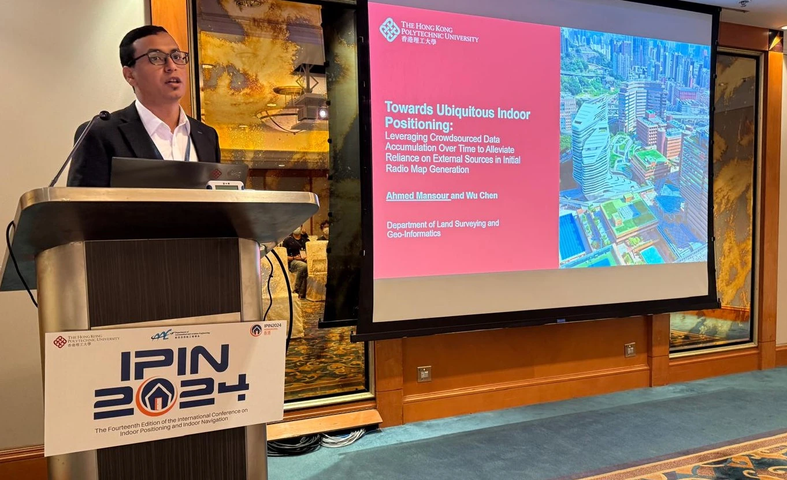

Cairo University, Egypt.
About the researcher
Ahmed Mansour
Indoor positioning, smartphone sensing, Wi-Fi fingerprinting, PDR, mobile crowdsensing, and deployment-ready indoor spatial intelligence.
Ahmed Mansour is a civil engineering and geomatics researcher whose work focuses on reliable indoor positioning and navigation in complex indoor and urban environments. His research connects inertial positioning, Wi-Fi fingerprinting, autonomous radio-map generation, mobile crowdsensing, GNSS/PDR integration, indoor-outdoor transition awareness, and multi-floor spatial context.

Research identity
From positioning signals to indoor spatial intelligence
The hub presents Ahmed Mansour's research as a connected pipeline: inertial sensing preserves relative motion, Wi-Fi fingerprinting and radio maps provide indoor reference information, multi-source fusion supports continuity across outdoor and indoor spaces, and 3D spatial context connects positioning outputs to floor-aware and building-level services.
Area 1Inertial positioning and PDRHeading drift, carrying modes, smartphone sensing, and correction sources.
Area 2Wi-Fi fingerprinting and radio mapsMobile crowdsensing, autonomous map generation, and reliability-governed updating.
Area 3Seamless indoor-outdoor fusionGNSS, PDR, Wi-Fi, BLE, barometer, maps, and transition awareness.
Area 43D indoor spatial contextFloor recognition, vertical positioning, 3D radio maps, and multi-level indoor structure.
Academic timeline
Education and research path
Cairo University, Egypt.
The Hong Kong Polytechnic University. Thesis: Indoor Localization Based on Multi-Sensor Fusion, Crowdsourcing, and Multi-User Collaboration.
Research work at The Hong Kong Polytechnic University on indoor positioning, radio mapping, and smartphone-based navigation.
Research outputs
Publication and resource entry points
Use these pages to move from the author profile to papers, citation records, machine-readable metadata, PDFs, and reproducibility notes.
Publication portfolioVisual paper cards, DOI links, PDFs, BibTeX, summaries, and research-area connections.
Research areasFour-area map connecting methods, sensing sources, deployment problems, and linked papers.
ResourcesPDF index, metadata files, code and dataset status, responsible sharing notes, and reproducibility material.
Citation resourcesAuthor identifiers, paper finder, DOI links, AI-search prompts, and citation guidance.
llms.txtAI-readable guide to the website, publication pages, research areas, and visual assets.
SitemapCrawlable site map for search engines and indexing tools.
Profiles and identifiers
Academic and professional links
Contact and collaboration
Research collaboration and citation inquiries
For questions about indoor positioning, Wi-Fi fingerprinting, pedestrian dead reckoning, mobile crowdsensing, 3D radio-map generation, or citation use of the published papers, use the contact link or start from the publication and citation-resource pages.